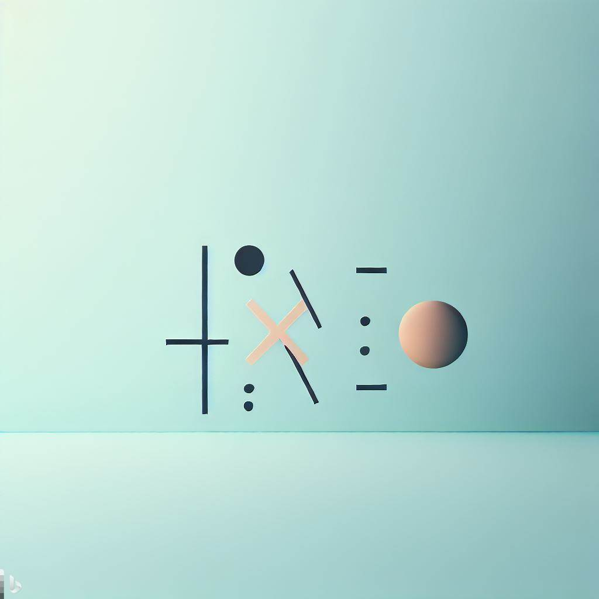
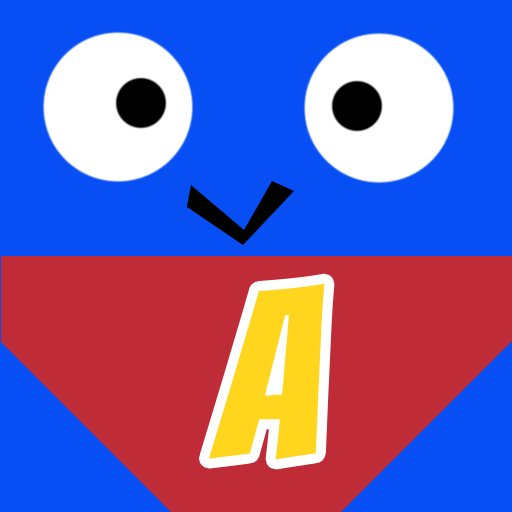

Programmation
C++/SFML
J'ai commencé à développer en C++ en 2015, grâce à ce langage, j'ai pu faire le jeu jumpgame et circle, ces deux jeux m'ont fait apprendre la sfml, une bibliothèque graphique 2D. J'ai aussi developpé des logiciels de calculs et de gestion de l'ordinateur.
Python
J'ai commencé à apprendre le python en terminale en 2019, les compétences acquises m'ont aidé lors de mon parcours en classe préparatoire où le python est enseigné. Je me suis lancé dans différents projets dans le but d'automatiser les tâches répétitives telles que le tri de photos.
Back-end
Grâce au C++, j'ai appris à manier le Back-end, avec les bases de données MySql et la gestion client serveur.
WEB
J'ai appris à utiliser l'HTMl et le CSS ansi que les librairies qui vont avec (bulma, aos, font awesome) pour créer ce protfolio ainsi que d'autres sites. Bien que cette compétence soit menacée par la montée de l'IA et des CMS, cela reste intéressant dans un portefeuille de compétences.
Mes Projets
PixTri
algorithme de tri d'images

PolySolver
résolution polynomes

Dodger
Jeu internet

repère
calculateur de coordonnées dans un repère
Contact